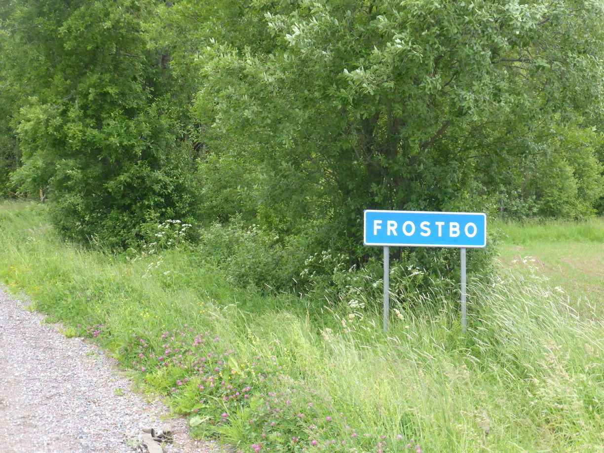

Kühe und Sauwetter Posted on June 20, 2016
Tag 23
Tjälvesta - Usken 93 km
Weiter ging es entlang des Sverigeleden in Richtung Nora. Zu Beginn gab es wieder leichten Regen, der sehr ähnlich war zu dem auf dem Weg nach Mariannelund. Diesmal hatte ich jedoch Regensachen dabei und der Regen war nicht ganz so schlimm. Unterwegs gab es wieder Kühe zu sehen.
Ich weiß die letzten paar Blogeinträge waren etwas Kuh-lastig aber bei diesen beiden Herden musste ich einfach anhalten und Photos machen.
Die letzten 20 km vor Nora gingen über Schotterwege durch ein riesiges Waldgebiet.
Die Gegend war früher vor allem durch Eisenabbau geprägt. Dewegen auch der Ausdruck “Schwedische Gardinen”.
In Nora habe ich mich erstmal in der Touristeninfo aufgewärmt. Dort konnte ich auch endlich mal die mitgebrachte Taschenlampe verwenden, da in der Toilette das Licht kaputt war. Als ich weiter fuhr hatte der Regen auch entgültig aufgehört.
Kurz nach Nora kam ich an einen Badeplatz am Usken. Dort traf ich Uwe, der zum See geradelt war um zu baden. Er war sehr interessiert an meiner Tour und wir haben uns lange unterhalten. Von ihm weiß ich, dass Usken aus dem Altnordischen kommt und Wasser bedeutet. Das Wort “Whisky” kommt auch daher.
Am Abend schien sogar kurz die Sonne. Leider konnte ich vor lauter Kribbelmücken das Zelt nicht verlassen.
Tag 24
Usken - Söderbärke 88 km
Der Hof eines Bergbauspezialisten am Usken
Am Morgen habe ich auf dem ICA-Parkplatz ein paar Rallyeautos gesehen. Die Matjesmädels, mit denen ich mich kurz unterhalten konnte fahren auch einmal um die Ostsee. In ihrem alten Volvo Kombi brauchen sie jedoch dafür nur 2 Wochen. Da kann ich nicht mithalten.
Nachdem ich zunächst ein paar weniger gute Badeplätze abgeklappert habe, habe ich mein Zelt im Park neben dem Badeplatz in Söderbärke aufgeschlagen. Dieser Liegt auf einer Halbinsel und man kann auf einem kleinen Pfad am Ufer entlang spazieren.
Tag 25
Söderbärke - Falun 97 km
Auf dem Weg nach Falun war das Wetter wieder regnerisch. Und dazu war es auch noch recht kalt. 
Die treue Leserschaft weiß sicher noch, wie ich in Deutschland nochmals zum Campingplatz zurückgeradelt bin, um den Schlüssel für mein Fahrradschloss zu holen. Wie sich herrausstellte hätte ich mir das auch sparen können, da mir auf dem Weg nach Falun das dazu gehörige Schloss abhanden gekommen ist. Diesmal war ich bereits einige Kilometer geradelt und hatte zu dem keinerlei Ahnung, wo das Schloss geblieben war. Ich hatte es auf eine der vorderen Taschen geschnallt und somit hätte es jederzeit runter fallen können. Somit habe ich das Schloss abgeschrieben und mich entschieden in Falun ein neues zu besorgen. Die Suche nach dem Fahrradladen nahm einige Zeit in Anspruch. Dort erstand ich ein recht einfaches Schloss und ein paar Beinlinge gegen die kalten Beine. Damit ich den Schlüssel nicht mehr verlieren kann, besitzt das neue Schloss einen Zahlencode.
Anschließend ging es zu einem Campingplatz neben der Skisprunganlage, der leider nicht ganz günstig war. WLAN und Duschen gab es zudem nur gegen Aufpreis. Ich hoffe die werten Leser nehmen es mir nicht übel aber duschen ist mir dann doch wichtiger als den Blog aktuell zu halten. Am Abend kam dann sogar noch die Sonne raus.